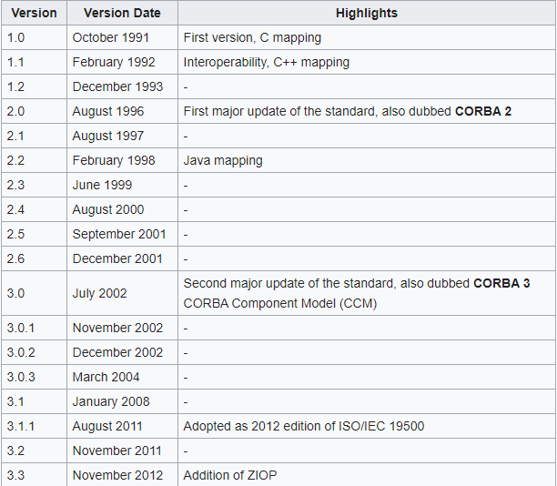

From its inception in October 1991 to till now there have been many versions of CORBA :-
 It is a process of associating a servent with a CORBA obj as to recieve requests.
This provides a serveant for Virtual form of CORBA Object. Lifetime of both servant abd objects are idependent.
Incarnate using - activate_object().
but the reverse is also possible, create_reference() activates an object without incarnating a servant, and servant incarnation is later done on demand with a Servant Manager.
Page no - 2